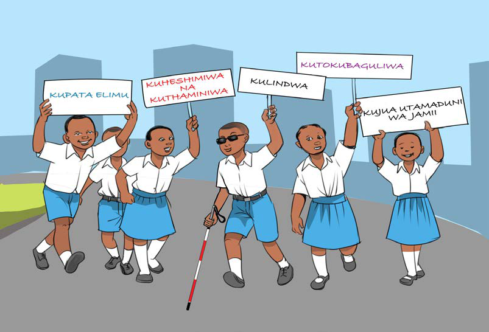

2019. Haki hizo zinatambuliwa kisheria na inakatazwa mtu au mamlaka yoyote kukiuka haki hizo katika jamii na Taifa. Uwapo wa haki hizo, unatoa nafasi kwa mtoto kulindwa dhidi ya ukiukwaji wa haki za mtoto kunakoweza kusababisha unyanyasaji, ukatili na udhalilishaji wa mtoto. Mtoto si wa familia peke yake, bali ni mali ya jamii na Taifa kwa ujumla, ndiyo maana haki za mtoto, zimetafsiriwa katika ngazi ya jamii na Taifa. Kielelezo namba 1, kinawasilisha baadhi ya haki za mtoto katika jamii na Taifa.

Kupata elimu na kujielimisha
Familia inajukumu la msingi la kumpa mtoto elimu. Aidha, jamii na Taifa wana wajibu wa kumwendeleza mtoto kwa kumpa elimu. Hii ni pamoja na kumpa elimu ya mila na desturi za jamii na Taifa. Pia, haki hii humpa mtoto nafasi ya kupata habari na elimu ya kutosha ili aweze kujitambua na kuchangia katika maendeleo ya jamii na Taifa. Aidha, mtoto ana wajibu wa kusoma kwa bidii ili kupata elimu iliyokusudiwa. Kielelezo namba 2, kinawasilisha watoto wakiwa darasani wakipata elimu.